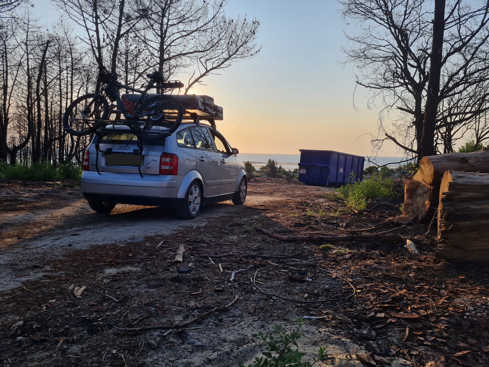
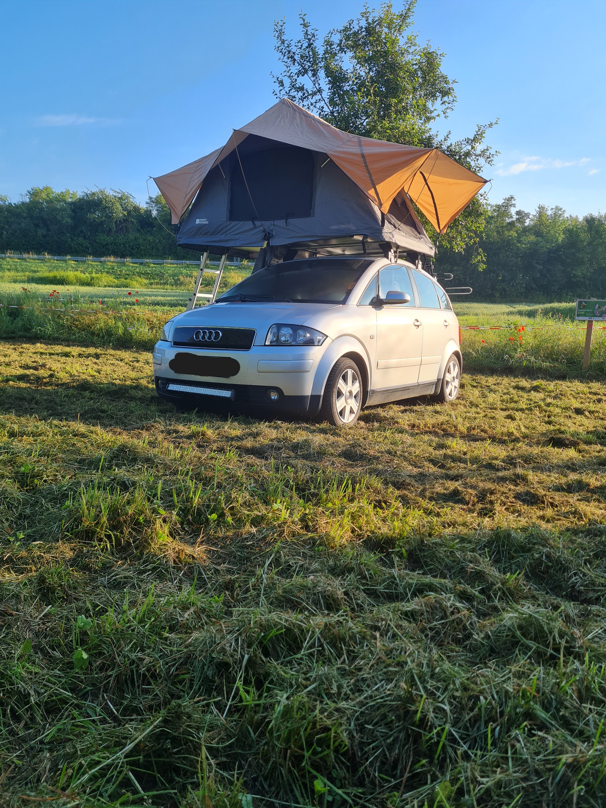

Der Audi A2

Sehr geehrte Audi A2-Fahrer,
wenn Sie ebenfalls einen Audi A2 fahren, habe ich erfreuliche Nachrichten für Sie. Sollten Sie Inspiration für Umbauten oder Reparaturen benötigen, lade ich Sie herzlich ein, mein Benutzerkonto wnowak im Audi A2 Forum zu besuchen. Dort finden Sie einige Ideen, die Ihnen bei Themen wie Radkappenreparaturen oder dem Soundsystem helfen können. Ich freue mich auf Ihren Besuch und darauf, den Austausch über unsere gemeinsamen Interessen zu fördern.Beste Grüße
Fehler beim Laden des Videos 42

